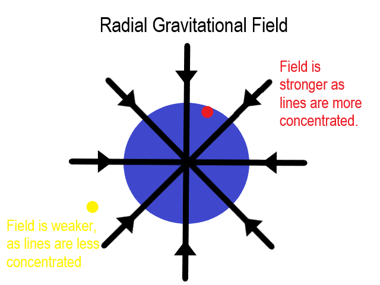
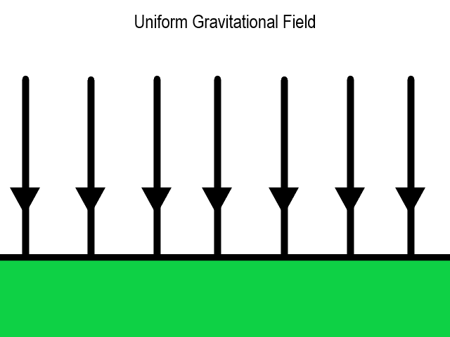
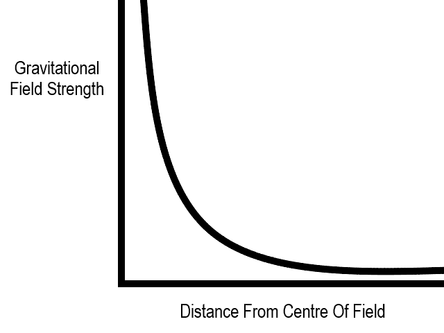

Gravitational and Electric Fields
Introduction to Gravitational Fields
Force Fields
- A force field is a region of space in which a non-contact force will be exerted on an object.
- A gravitational field is a type of force field, in which only objects with mass will experience a force.
- Gravity is by far the weakest of the fundamental forces. Therefore, a lot of mass is required for a noticeable gravitational field to be created (for example the mass of a moon, planet or star).
- When two objects interact via gravity, they exert an equal and opposite force on one another because of Newton's Third Law. For example, the Earth's gravitational pull is responsible for keeping the Moon in orbit, and the Moon exerts an equal and opposite force on the Earth. This force (along with that from the Sun) causes the tides on Earth.
- A test mass is a mass that is very small compared to the mass causing the gravitational field it exists within. For example, a basketball falling to the ground is a test mass inside the Earth's gravitational field. A test mass must be so small that ti does not have any significant effect on the gravitational field it is influenced by.
- Force fields can be represented with diagrams. Said diagrams use arrows, also called field lines, to show the direction of the force at regular points in the field. The concentrations of arrows represents the strength of the field at a given point.
- A radial field is one that occupies a sphere around a central point. All the field lines will meet at said central point. The strength of a radial field decreases with the distance from the centre, which can easily be seen on a diagram, as the lines get further apart (less concentrated) the further out you go.

- A uniform field is one in which all the field lines are evenly spaced and point in the same direction. Because the lines are evenly spaced, the magnitude of the force per unit mass is the same at all points in the field. Because the directions of the field lines are all the same, the direction of the force is constant throughout the field. The Earth's surface can be modelled as a uniform field at low altitudes.

Newton's Law of Gravitation
- Gravity is an attractive force that acts on all objects with mass.
- Some objects can be modelled as point masses, where we can assume that gravity acts only from one point. Planets, stars and other objects that are close to being uniform spheres can often be modelled in this way.
- Newton's Law of Gravitation states that: force of gravity between two masses = gravitational constant × (mass of object 1 × mass of object 2) / distance². The distance used should be the distance between the centres of mass of the objects. In symbols, this is: F = G × M × m / (r²).
- Newton's Law of Gravitation is an inverse square law, meaning that the force between the two masses is inversely proportional to the square of the distance.
- The gravitational field strength at a point in a field is the force per unit mass that a test mass will experience at that point in the field. It is measured in NKg⁻¹, and is often represented with a lower case g. In symbols, the gravitation field strength equation can be written as g = F / m.
- F = G × M × m / (r²), where M is a large mass and m is a test mass. Therefore, we can divide by the test mass on both sides to get the gravitational field strength at a distance, r, using the equation: g = G × M / (r²). This means that the gravitational field strength is inversely proportional to the square of the distance between the attracted masses.
- The graph below shows an inverse-square graph of gravitational field strength (y-axis) against distance from the centre of the field (x-axis):

- g = F / m. Therefore, F = mg. As F = ma, the acceleration experienced by a test mass in a gravitational field of strength g must be equal to g ms⁻².
- At the Earth's surface g = 9.81NKg⁻¹.